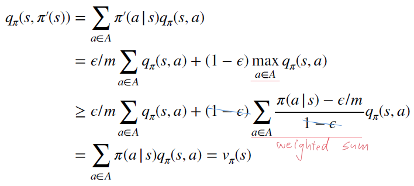
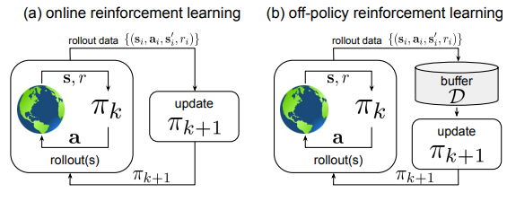
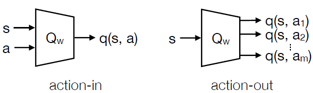
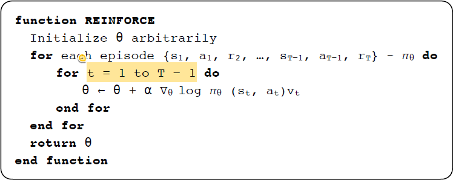
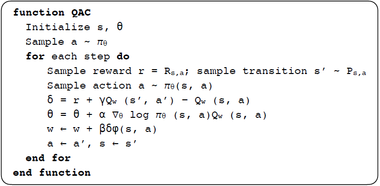
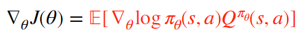
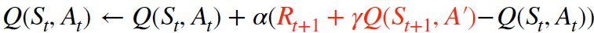
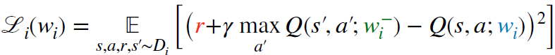
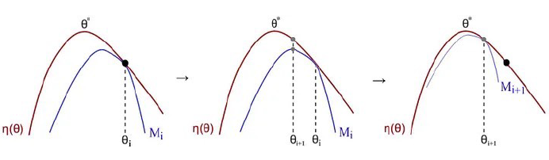

Handouts
Lecture_8_Deep_RL_Algorithms.pdf（PDF 講義未公開）
Lecture_5_Model_Free_Control.pdf（PDF 講義未公開）
Lecture_6_Value_Function_Approximation.pdf（PDF 講義未公開）
Lecture_7_Policy_Gradient_Methods.pdf（PDF 講義未公開）
Lecture_8_Deep_RL_Algorithms.pdf（PDF 講義未公開）
Introduction
-
Planning vs. Reinforcement Learning
- Planning: there is environment (model) information, transition probability, and reward
- Reinforcement Learning: No environment (model) information, transition probability, and reward
Planning Reinforcement Learning Transition probability V X Reward V X -
Prediction vs. Control
- Prediction: giving a fixed policy to evaluate the future
- Control: find the best policy to optimize the future
-
MP vs. MRP vs. MDP
- Markov process (MP):
- Markov reward process (MRP): MP + reward →
- Markov decision process (MDP) MRP + action →
-
Bellman Equation
-
Direct solution
-
Iterative solution
- Dynamic programming (known environment)
- Monte Carlo evaluation (unknown environment)
- Temporal difference evaluation (unknown environment)
-
-
Bellman Expectation Equation vs. Bellman Optimality Equation
- Bellman expectation equation: evaluate the value/action value function under a fixed policy
-
State value equation
-
Action value equation
-
- Bellman optimality equation: evaluate the value/action value function under the best policy
-
State value equation
-
Action value equation
-
- Bellman expectation equation: evaluate the value/action value function under a fixed policy
-
Dynamic programming
For solving the Bellman equation
Problem Bellman Equation Algorithm Prediction Bellman expectation equation Iterative policy evaluation Control Bellman expectation equation+ greedy policy improvement Policy iteration Control Bellman optimality equation value iteration - Policy iteration: find the current best action as a policy to update the value function
- policy evaluation (value function ) + policy improvement (e.g. greedy algorithm)
- Value iteration: keep finding the best action value function from the future to update the current value function
- Policy iteration: find the current best action as a policy to update the value function
-
Monte Carlo vs. Temporal difference
Bootstrapping: update involves an estimate
Monte Carlo Temporal Difference Bootstrapping X V Termination state V not necessary Biased zero some Variance high low -
Prediction & Control
Monte Carlo Temporal Difference Prediction MC learning TD learning Control (on-policy) MC control SARSA Control (off-policy) Q learning - Prediction
-
Monte Carlo: No boostrapping, termination.
: incremental total return
: incremental counter
: current return
: step size,
-
Temporal Difference: boostrapping, no need termination state.
: TD target
: TD error
-
TD: n-step temporal difference
-
- Control
-
MC control
policy evaluation (action value function )+ policy improvement (-greedy algorithm)
-
-greedy algorithm proof

-
-
SARSA
-
n-step SARSA
-
Q learning: two policy exist
- behavior policy: ,
- target policy: ,
-
- Prediction
-
On-policy RL vs. off-policy RL

- On-policy RL: not reuse the data, not sample efficiency.
- Off-policy RL: reuse the data, sample efficiency.
-
Online RL vs. offline RL
- Online RL: interacts with the environment during training
- Offline RL: not interact with the environment during training (the dataset is collected in advance)
-
Model-free RL vs. model-based RL
- Model-free:
- Model-based:
-
Tabular RL vs. scale-up RL
Tabular Scale-up State space finite set Large set or infinite set (continuous) Action space finite set Large set or infinite set (continuous) -
Scale-up RL
-
Value function approximation
Goal: find a parameter vector minimizing mean-squared error between the true value function and its approximation
: neural network parameters
-
weight update induction :
-
Stochastic gradient descent (SGD)
-
How to solve ? Ans: Represent the value function by a linear combination of features
Feature
value function by a linear combination of features
The loss function and update can be represented as follows
- loss function
-
We don’t have ground truth , how?
-
For MC, using instead.
-
For TD(0), using TD target instead.
-
-
-
Action-value function approximation
action-in vs. action-out

-
-
Policy gradient
Goal: given a policy with parameters , find best
- How to measure the quality of ? → How do we define how best is?
-
Episodic environments: start value
-
Continuing environments
average value
Average Reward per time-step
- : 在 這個policy 下，平均停留在 state 的機率
- : 在 這個policy下，這個state s 獲得Reward的期望值
-
Goal: Find that maximizes
: policy gradient
Goal: Compute → compute the
Goal: Compute the
-
score function derivation
: score function, the gradient of the log-likelihood function
Goal: Compute the score function
Discrete action space: Softmax policy
Score function
-
score function derivation
Take the log of
Take the gradient
- The first term
- The second term
Score function
Continuous action space: Gaussian policy
Mean:
Variance: (assume fixed number)
Score function
-
score function derivation
TBD
Caculate the policy gradient
-
Policy gradient for one-step MDP
We try to maximize the estimation of total reward
Gradient ascent
-
Policy gradient for multi-step MDP → introduce policy gradient theorem
We try to maximize the estimation of total reward
trajectory
trajectory total reward
How to get ?
Put back into gradient of the estimation of the total reward
Gradient ascent
Policy gradient theorem
-
Trajectory level
-
State-action level
-
Derivation of the trajectory level to the state-action level
[[Techniques/Reinforcement Learning/策略梯度定理推導：從軌跡視角到狀態-動作對視角|策略梯度定理推導：從軌跡視角到狀態-動作對視角]]
-
Monte-Carlo policy gradient (REINFORCE)

-
Actor-critic policy gradient
Solve the high gradient of REINFORCE → using approximate policy gradient

-
Policy gradient method summary
Method REINFORCE Q Actor-Critic Advantage Actor-Critic TD Actor-Critic TD() Actor-Critic
- How to measure the quality of ? → How do we define how best is?
-
-
Value-based vs. policy-based vs. actor-critic
-
value-based: value function approximation
-
policy-based: policy gradient method
- Monte-carlo policy gradient (REINFORCE)
-
actor-critic: because REINFORCE has high variance

- is the actual return of one trajectory
- Use an auxiliary critic (value approximation) to estimate the
Value approximation Policy gradient State space Infinite Infinite Action space Discrete (greedy algorithm) Discrete/Continuous (Softmax/Gaussian) • softmax 後直接選機率最大的 • gaussian output $\sigma, \mu$ || Policy | Deterministic | Stochastic | | | Convergence | Bad | Good | |
-
-
QN vs. DQN
類似但實則不同，難以言傳需意會
QN : 目標是多次sampling然後得到Q的最佳值平均 → minimize 括號內的值

DQN : 目標是直接 minimize 括號內的值(所以也可以用LS)

Reinforcement Learning Algorithm
Deep Reinforcement Learning Algorithm
Deep reinforcement learning algorithm(value approximation, policy gradient)
-
DQN
-
DDPG: Deep Deterministic Policy Gradient
-
off-policy, actor-critic, continuous action
-
DQN can only deal with discrete action space → replace with policy network
- maximize
- minimize
-
-
TD3: Twin Delayed DDPG
- off-policy, actor-critic, continuous action
-
D4PG: Distributed Distributional Deterministic Policy Gradients
- off-policy, actor-critic, continuous action
-
A2C: Advantage Actor Critic
- use advantage function instead of action value function to update the policy
- Use the state value function as the baseline function
-
A3C: Asynchronous Advantage Actor Critic
- on-policy, actor-critic, continuous action
-
TRPO: Trust region policy optimization
-
on-policy, actor-critic, continuous action
-
Constraint the policy changes so that we do not make too aggressive moves
-
We want to
- guarantee the improvement in rewards
- limit the change in the policy behaviors
-
Minorize-maximization algorithm (MM algorithm)
-
Find a lower bound M approximating the expected reward η locally at the current guess
-
We locate the optimal point for M and use it as the next guess

-
-
Optimization strategy
- line search → like gradient descent/ascent
- trust region → First decide the step size and then construct a region (i.e., trust region) by considering the as the radius of the circle
-
Importance sampling
-
我們想要用舊policy 產生出的軌跡來update 新 policy
$\downarrow$
-
-
TRPO objective
- Construct a lower bound function for MM algorithm
- When updating the policy, we want to
- Limit the change in the policy behaviors: KL-divergence constraint
- Guarantee improvement in rewards: MM algorithm
-
-
PPO: Proximal policy optimization
-
on-policy, actor-critic, first-order, policy gradient
-
Make the first order derivative solution, like the gradient descent, closer to the secondorder derivative solution by adding soft constraints:
-
Generalized Advantage Estimation (GAE)
-
PPO-Penalty
-
PPO-Clip
-
-
SAC: Soft actor critic
- off-policy, actor-critic, policy gradient
- Maximum entropy reinforcement learning
- Soft Q learning
- Reparameterization trick
- model
- actor
- critic